Implementación en circuitos eléctricos
Para iniciarnos en la lógica de contactos y la lógica de funciones, comenzaremos analizando circuitos simples que nos permitan introducir definiciones y conceptos básicos. Esto nos servirá como base para, más adelante, poder analizar y comprender sistemas más complejos.
En esta etapa, no nos enfocaremos en el comportamiento físico o eléctrico de los circuitos, sino únicamente en su comportamiento lógico o funcional. Es decir, no realizaremos cálculos ni análisis de magnitudes eléctricas como tensiones, corrientes o potencias.
Utilizaremos el Álgebra de Boole como herramienta matemática para estudiar y formalizar el comportamiento lógico de estos sistemas, ya sean eléctricos, neumáticos, mecánicos, u otros.
Comencemos por el circuito elemental que se muestra en la figura:
En este circuito eléctrico encontramos una fuente de tensión de corriente continua V, un pulsador a y una lámpara z. La simbología que se presenta de los componentes corresponde a la utilizada en normativa eléctrica.
En este sistema, tanto la lámpara como el pulsador tienen dos posibles estados de funcionamiento, que llamaremos estados lógicos:
Para la lámpara z:
-
Estado 1: Lámpara APAGADA = " 0 "
-
Estado 2: Lámpara ENCENDIDA = " 1 "
Para el pulsador a:
-
Estado 1: Pulsador ABIERTO = " 0 "
-
Estado 2: Pulsador CERRADO = " 1 "
Hemos asignado un símbolo numérico a cada uno de los estados del pulsador y la lámpara. El estado 0 representa a los componentes en su estado INACTIVO, mientras que el estado 1 indica que se encuentran en su estado ACTIVO.
Estos componentes, cuyo comportamiento puede representarse con dos estados posibles, se denominan variables lógicas del sistema: son "variables", porque pueden cambiar de estado, y son "lógicas", porque sus estados posibles son únicamente dos: 0 ó 1 / INACTIVO ó ACTIVO.
Además, diferenciamos estas variables en variables independientes y variables dependientes.
En nuestro caso:
-
El pulsador será nuestra variable lógica independiente.
-
La lámpara, nuestra variable lógica dependiente.
A continuación, construiremos una tabla que muestre la relación entre ambas variables.
La tabla simplificada que aparece a la derecha se denomina tabla de verdad del sistema.
Esta tabla describe el comportamiento de la variable lógica dependiente z en función de los posibles estados de la variable lógica independiente a.
Desde el Álgebra de Boole, podemos formular una expresión algebraica lógica que representa esta relación:
z(a) = a
o, de forma simplificada: z = a
Esta fórmula, o expresión lógica, indica que el estado de la lámpara (z), definido como 1 cuando la lámpara está encendida, depende directamente del estado del pulsador (a), definido como 1 cuando el pulsador está presionado y cerrado.
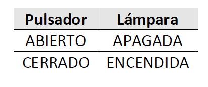
Definiciones:
-
Variables lógicas independientes:
Se utilizan para representan a cualquier dispositivo o elemento, generalmente de mando, que no dependen de otras variables, como pueden ser pulsadores, llaves, sensores, finales de carrera, etc. y que tiene sólo dos estados lógicos posibles.
A estas variables las indicamos con letras (a, b, c…)
También se las denomina variables de entrada de la función lógica.
-
Variables lógicas dependientes ó funciones lógicas:
Se utilizan para representar a cualquier dispositivo o elemento que dependa de otras variables lógicas, como podrían ser lámparas, leds, motores, etc. y que tiene sólo dos estados lógicos posibles.
-
Tabla de verdad:
En una tabla de verdad se indica para cada combinación posible de estados de las variables lógicas independientes (pulsadores, llaves, etc.) el estado lógico de las variables dependientes (led, lámpara, etc.).
-
Expresión algebraica lógica:
Es una “fórmula” que indica cómo y de qué variables lógicas independientes depende una variable dependiente o función lógica.
OPERACIONES LÓGICAS
SUMA LÓGICA:
En el circuito de la figura disponemos ahora de una lámpara z (variable lógica dependiente) y de dos pulsadores a y b como elementos de mando (variables lógicas independientes).
Los pulsadores son independientes entre sí, y están conectados en “paralelo”. A su vez ambos pulsadores se encuentran en “serie” con la lámpara z.
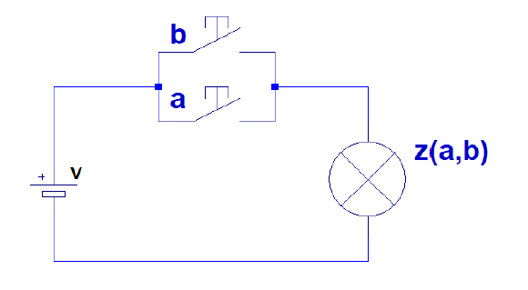
¿Cuántas estados posibles existen teniendo en cuenta ambos pulsadores?
Tenemos 4 posibles combinaciones de las variables independientes (pulsadores a y b), ya que, para cada uno de los posibles valores o estados de uno de ellos, hay 2 posibles estados para el otro:
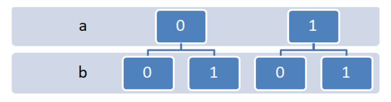
Matemáticamente, la cantidad de combinaciones posibles se calcula como:
Donde la base corresponde a la cantidad de estados posibles (siempre es 2 para variables lógicas), y el exponente indica la cantidad de variables independientes (en nuestro caso los pulsadores a y b).
Tabla de verdad:
La lámpara sólo se encuentra apagada si los dos pulsadores permanecen abiertos. Con sólo cerrar alguno de los pulsadores la lámpara enciende. La tabla de verdad que describe este comportamiento es:
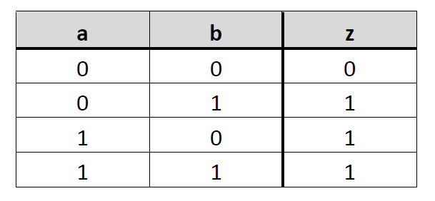
Expresión algebraica:
Definimos esta conexión de pulsadores como suma lógica y para representarla algebraicamente elegimos el signo u operador suma “+”:
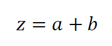
Nota importante:
No confundir la “suma lógica” con la “suma aritmética”.

Nótese que “1 + 1 = 1”.
Esto es porque los dígitos 0 y 1 los utilizamos para representar estados y no cantidades. En el álgebra de Boole, sólo existen el 0 y el 1, y por tanto el resultado de toda operación lógica será 0 ó 1.
Compuerta Lógica:
Para la SUMA LÓGICA de dos variables de nuestro ejemplo, la COMPUERTA LÓGICA OR que se utiliza es:
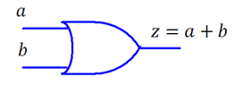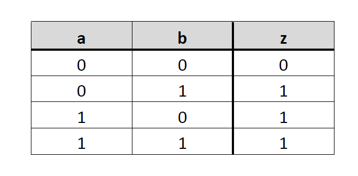
Tenemos hasta ahora 4 formas de definir o expresar una función lógica:
-
Circuito eléctrico.
-
Tabla de verdad.
-
Expresión algebraica lógica.
-
Representación con compuertas
PRODUCTO LÓGICO:
En este caso los pulsadores y la lámpara están conectados en serie.
La lámpara sólo puede encender si ambos pulsadores están presionados.
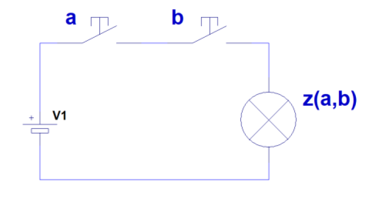
Tabla de verdad:
Nuevamente la cantidad de combinaciones posibles de las variables independientes (los pulsadores a y b) es 4.
Para este caso, la tabla de verdad que corresponde es:
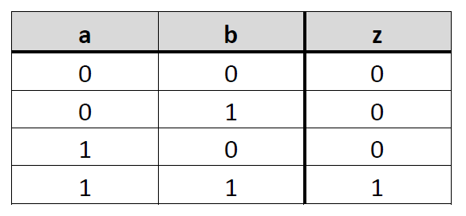
Expresión algebraica:
Definimos esta conexión de pulsadores como producto lógico y para representarla algebraicamente elegimos el signo u operador suma “.”:
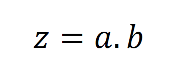
Compuerta Lógica:
Para el PRODUCTO LÓGICO de dos variables de nuestro ejemplo, la COMPUERTA LÓGICA AND que se utiliza es:
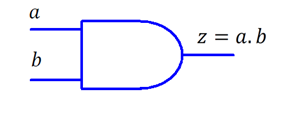
NEGACIÓN
Nota: Si bien la negación no es estrictamente una operación analizaremos en esta sección cómo implementar la función en un circuito eléctrico.
En este caso el pulsador se conecta en paralelo con la lámpara y se ha agregado un resistor en serie:
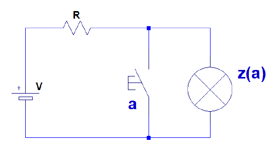
Por el momento no nos preocupemos por el resistor y analicemos cómo funciona lógicamente el circuito.
En este caso si el pulsador está abierto, es como si no existiera en el circuito, por lo tanto la corriente circula por el resistor y la lámpara y ésta se enciende.
El circuito que queda “para a = 0” es:
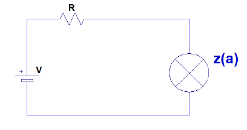
Por otra parte, si se presiona el pulsador éste se cierra y funciona como un puente en paralelo con la lámpara.
El circuito “para a = 1” sería:
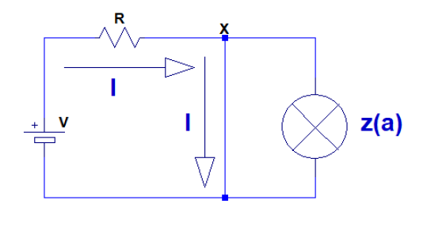
En este caso, al cerrar el pulsador se ha “cortocircuitado” a la lámpara y por ésta no circula corriente. Su tensión es cero y por lo tanto está apagada.
La función del resistor es evitar que la fuente V quede en cortocircuito.
En próximas unidades del curso estudiaremos cómo realizar una negación mediante elementos auxiliares que eviten la necesidad de incorporar este resistor.
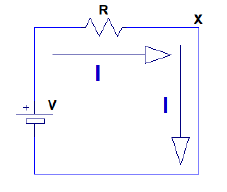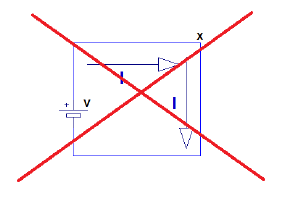
Tabla de verdad:
En este caso vemos que la tabla de verdad es:
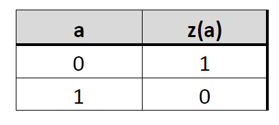
Ya que cuando el estado del pulsador está abierto (a=0), la lámpara está encendida (z=1) y viceversa.
Expresión algebraica:
Para representar la NEGACIÓN en una expresión algebraica se usa el siguiente signo u operador:
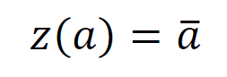
Compuerta Lógica:
Para la NEGACIÓN, la COMPUERTA LÓGICA NOT que se utiliza es:
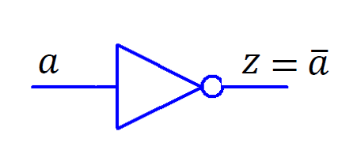
PULSADORES
Los pulsadores en industria se clasifican en:
-
Pulsadores NA (normalmente abierto), que al presionarse cierran sus contactos.
Comunmente utilizados como pulsadores de marcha o inicio de un proceso.
-
Y Pulsadores NC (normalmente cerrados), que al presionarse abren sus contactos.
En general utilizados como pulsadores de parada o detención de un proceso.
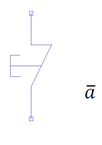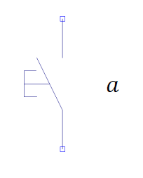
Pulsador NA / Pulsador NC
Es importante comprender que el uso de un pulsador NC en lugar de un pulsador NA modifica por completo el funcionamiento de un circuito.
En el último circuito por ejemplo, se lograría la función NEGACIÓN directamente mediante el uso de un pulsador NC en serie con la lámpara.
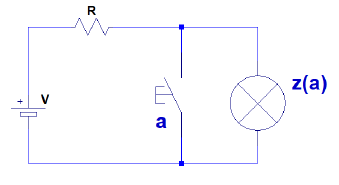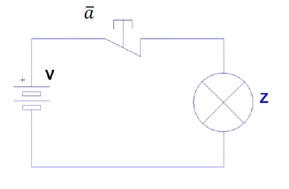
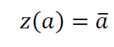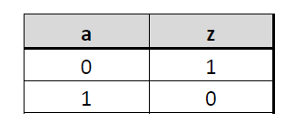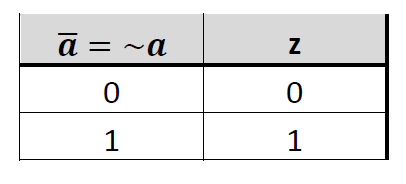
REVISIÓN COMPUERTAS LÓGICAS:
Las compuertas lógicas surgieron para representar circuitos integrados electrónicos, sin embargo son símbolos que se utilizan para representar las operaciones y funciones lógicas “independientemente de su implementación”.
Es decir que se pueden aplicar a distintas tecnologías: electrónica, eléctrica, neumática, hidráulica, etc.
Tienen entradas y generalmente una salida. Las salidas de una compuertas pueden conectarse a las entradas a otras compuertas formando un circuito que se llama “circuito lógico”.
¿Cómo funcionan?
Reciben una o más señales de entrada (0 o 1) y entregan una salida lógica, también 0 o 1, según el tipo de operación (AND, OR, NOT, etc.).
Se pueden implementar:
-
🧠 En lógica cableada (hardware)
-
💾 En programación (PLC, Arduino, etc.)
-
📐 En diagramas de escalera (ladder)
Tipos comunes de compuertas lógicas:
|
Compuerta |
Operación |
Ejemplo práctico en automatización |
|---|---|---|
|
AND |
Salida es 1 solo si todas las entradas son 1 |
Arranca una máquina si el botón está presionado y la tapa está cerrada |
|
OR |
Salida es 1 si al menos una entrada es 1 |
Activa una alarma si hay presión o temperatura alta |
|
NOT |
Invierte la entrada (0 → 1, 1 → 0) |
Activa un extractor cuando no hay ventilación |
|
NAND |
Inverso de AND |
Seguridad: si no se cumplen todas las condiciones, apaga |
|
NOR |
Inverso de OR |
Apaga todo si ninguna condición está activa |
|
XOR |
Salida es 1 si las entradas son diferentes |
Permite que una luz se encienda con dos interruptores cruzados |
Mira la siguiente presentación donde desarrollamos las tablas de verdad y un circuito esquemático de ejemplo para cada compuerta lógica.